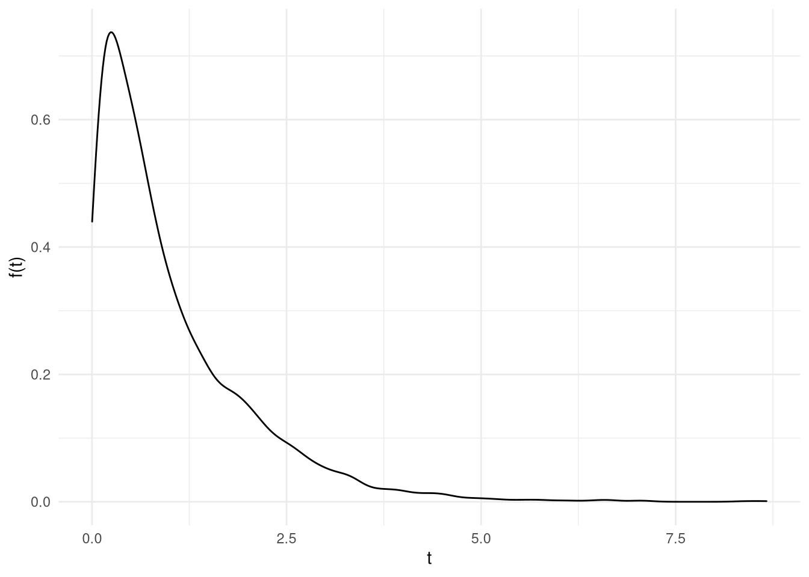

2 Definições básicas
Seja \(f(t)\) a função densidade de probabilidade da variável aleatória \(T\) (tempo até o evento ocorrer). Definimos a função de distribuição acumulada da variável aleatória \(T\) como sendo:
\[ F(t) = P(T < t) = \int_{0}^{t}f(u)du \]
E por consequência \(f(t)\) fica definida como:
\[ f(t) = \lim_{\Delta t \rightarrow 0^{+}} \dfrac{P(t<T \leq t + \Delta t)}{\Delta t} = \dfrac{dF(t)}{dt} \]
2.1 Função de Sobrevivência
A função de sobrevivência é o complemento da função de distribuição acumulada, isso é:
A probabilidade de uma observação não falhar até um tempo \(t\):
\[ S(t) = P(T>t) = 1 - F(t) \]
Pela Figura 2.1 podemos ter um vislumbre que \(S(0) = 1\) e \(S(\infty) = 0\).
A demonstração de tais fatos fica a cargo do leitor, basta notar que \(S(t) = 1 - F(t)\) e usar as propriedades da \(F\).
Por consequência a probabilidade de não sobreviver até um certo tempo \(t\) é:
\[ 1- S(t) \]
Assim a probabilidade de não sobreviver em um intervalo \((t_1,t_2)\) é dado por:
\[ 1-S(t_2) - (1-S(t_1)) = S(t_1) - S(t_2) \]
2.2 Função taxa de falha
Fornece o potencial (taxa de falha) instantâneo do evento ocorrer, dado que o indivíduo sobreviveu até o tempo \(t\):
\[ \lambda(t)= \lim_{\Delta t \rightarrow 0^{+}} \dfrac{P(t \leq T < t + \Delta t| T \geq t )}{\Delta t} \]
Assim estamos interessados em saber qual a probabilidade dele não sobreviver o tempo adicional \(\Delta_t\).
Ou seja, temos interesse que o evento ocorra, em termos de interpretação é o oposto da função de sobrevivência.
Nota
A taxa de falha não é uma probabilidade! Pois quando dividimos por \(\Delta_t\) obtemos uma probabilidade por unidade de tempo, ou seja a imagem de \(\lambda\) é positiva mas não limitada.
Pelas relações a seguir vemos que a função taxa de falha determina completamente a distribuição de \(t\).
2.2.1 Relações
- \(\lambda(t) \geq 0\)
Demonstração
É trivial pois por definição medidas de probabilidade \(\in [0,1]\) e \(\Delta_t \geq 0\) portanto um produto de números positivos - \(\lambda(t) =\dfrac{f(t)}{S(t)} = -\dfrac{d}{dt}\bigg(\text{log}(S(t))\bigg)\)
Demonstração
Sabemos que \(S(t) = P(T>t)\), substituindo, obtemos:
\[ \lambda(t) = \dfrac{f(t)}{1 - F(t)} = \dfrac{\dfrac{dF(t)}{dt}}{1 - F(t)} = -\dfrac{-\dfrac{dF(t)}{dt}}{1 - F(t)} = -\dfrac{d}{d_t}\text{log}(S(t)) \]
Multiplica-se e divide-se a expressão por \(-1\), e utiliza-se que a derivada é um operador linear.- vmr(t) = \(\dfrac{\int_{t}^{\infty}(u-t)f(u)du}{S(t)} = \dfrac{\int_{t}^{\infty}S(u)du}{S(t)}\)
Demonstração
Vamos utilizar integral por partes, usando a fórmula definida no Apêndice. Tomando \(f = u - t\) e \(g' = f(u)\), obtemos:
\[ = \lim_{b \rightarrow \infty} (u-t)S(u)\bigg|_{t}^{b} - \int_{t}^{\infty}- S(u)du = \int_{t}^{\infty}S(u)du \]
Onde o resultado final é encontrado usando \(f(u)du = - \dfrac{d}{du}S(u)\) e sabendo que \(S(t) \rightarrow\) 0, quando \(t\) \(\rightarrow \infty\)